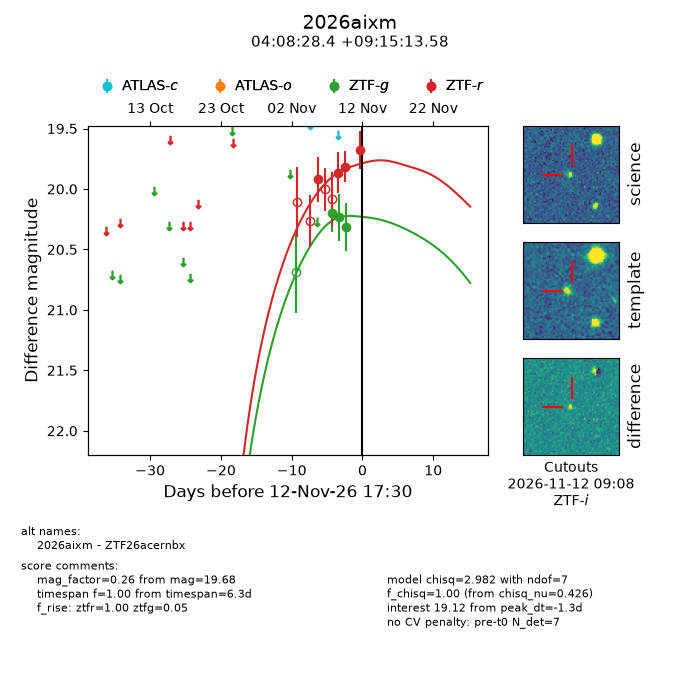
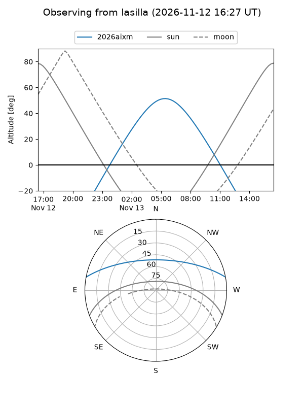
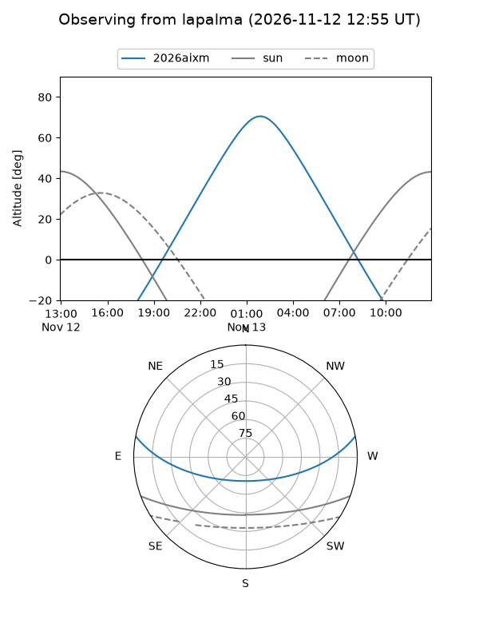
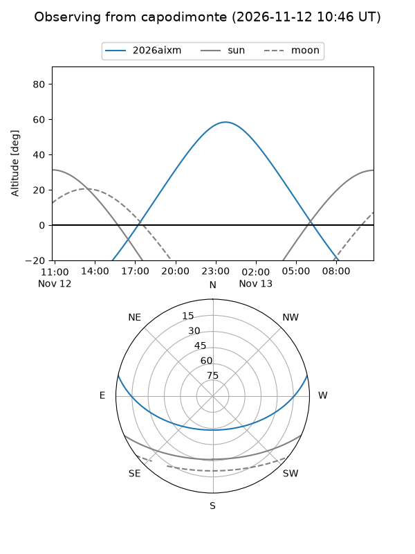
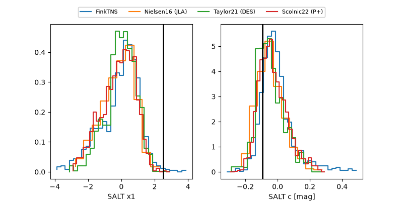

2026aixm
Target 2026aixm at 2026-11-12 17:36
Aliases and brokers:
FINK-ZTF: ztf.fink-portal.org/ZTF26acernbx
Lasair-ZTF: lasair-ztf.lsst.ac.uk/objects/ZTF26acernbx
ALeRCE-ZTF: alerce.online/object/ZTF26acernbx
YSE-PZ: ziggy.ucolick.org/yse/transient_detail/2026aixm
TNS name: wis-tns.org/object/2026aixm
Direct TNS query: direct search
alt names
ZTF26acernbx (ztf,fink_ztf)
2026aixm (tns,yse)
Coordinates:
equatorial (ra, dec) = 62.1182,+9.25377
equatorial (HMS+DMS) = 04:08:28.36,+09:15:13.58
galactic (l, b) = (182.6400,-29.99744)
Flags:
peak dt: -1.3
Photometry:
last ztfg=20.32, ztfr=19.68
3 ztfg, 4 ztfr detections
Lightcurve

Visibility



Additional plots
